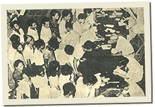

|
j
a v a s c r i p t |
January 6, 1942
Went to the City Hall to get my 1942 Residence Certificate, but found the place frozen in chaos. Business today was difficult due to a shortage of coins and small bills.

Lining Up for Residence Certificates
Biked to town in the afternoon with Maurice, and found it abuzz with rumors of a Japanese defeat in the north, coinciding with reports of troops heading north last night. I saw twenty trucks leave today and others saw more. A prominent Filipino got a visit from two soldiers asking for whiskey, and made the mistake of allowing them to drink at his home. They promptly got drunk, threatened him, and were asking for the women of the house when Japanese officers, alerted by the smart houseboy, arrived to his rescue. The calm in the city was almost tragically shattered at the scene of a fire when a kid moved to the front of the crowd. A soldier clubbed him with his rifle, then grabbed his wrist and twisted it. A tense standoff ensued when two sentries arrived and pointed their machine guns at the now hostile crowd, until the boy was released. |
|
|
|
|